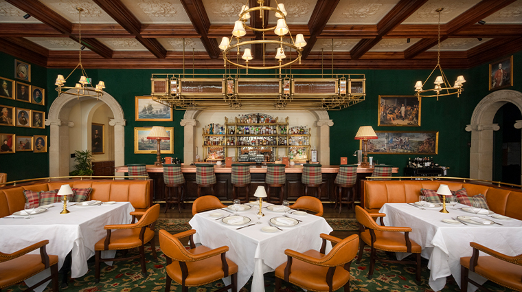
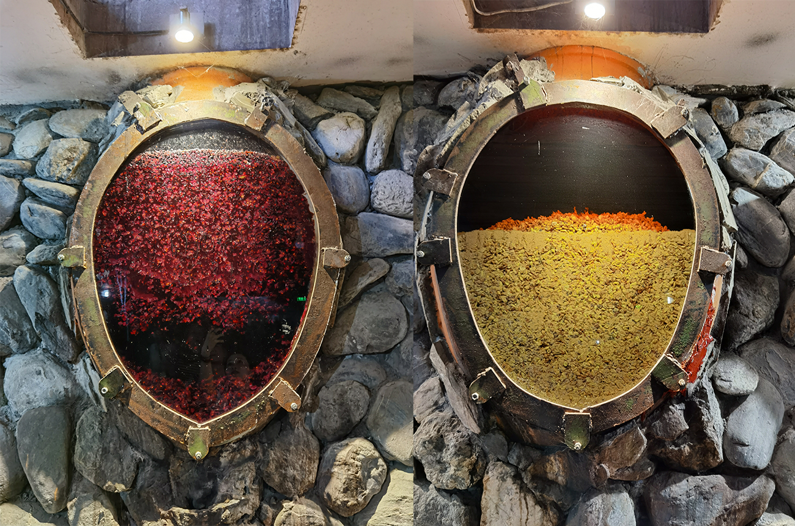

A Feast for Every Guest
In Georgia, a guest is a gift from God. Supra Tbilisi was opened in 2015 by the Beridze family to share that hospitality with everyone who walks through our door.
Our bread is baked in a traditional clay tone oven, our herbs come from small farms near Telavi, and our wine is aged in handmade earthenware jars buried deep underground.
— The Beridze Family
Discover Our Heritage
Click the tabs below to explore what makes our kitchen special
Pure Regional Ingredients
We source our sulguni cheese directly from farm dairies in Samegrelo and select sun-dried spices from Kutaisi markets. No pre-made sauces or artificial shortcuts — every broth, pastry, and marinade is prepared from scratch daily.

Ancient Qvevri Wine-Making
Preserving 8,000 years of unbroken Georgian winemaking culture.
Our Journey
- 2015 Opened with 6 tables and one tone oven.
- 2018 Added the wine cellar with 40 qvevri bottles.
- 2021 Introduced the Friday live folk music nights.
- 2025 Voted Best Georgian Restaurant by local diners.